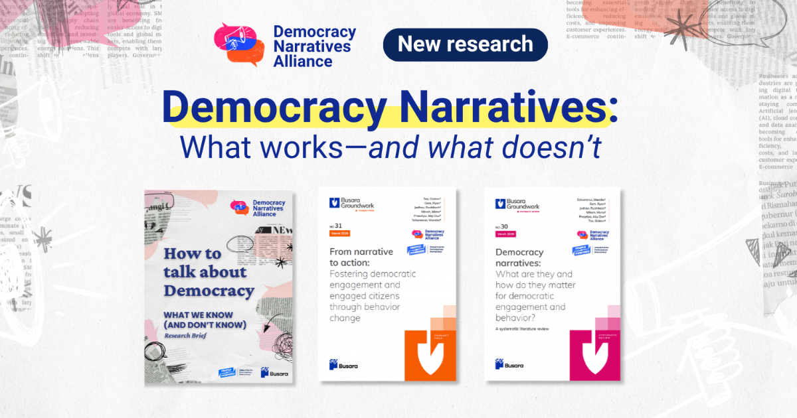
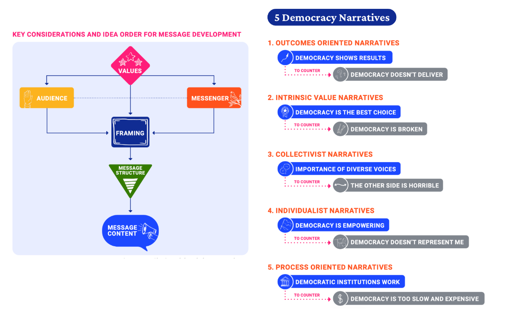

Democracy narratives research and campaign

Open original project pageA new initiative to compile, develop, and promote compelling narratives that increase public support for and engagement in democracy. The Democracy Narratives Campaign brings together more than 30 organizations, research institutions, and funders working on democracy and communications. It is supported by initial funding from Switzerland's Federal Department of Foreign Affairs.
In March 2026, we've published a set of research briefs for this campaign. The brief maps the dominant narratives shaping how people understand democracy and identifies practical strategies for rebuilding support, engagement, and participation. It synthesizes evidence from over 150 studies from academic and practitioner publications, and insights from more than 40 organizations, researchers, and funders who are part of the DNA.

What’s in the brief:
Five categories of democracy narratives that shape public attitudes — from outcomes-oriented to process-oriented — each paired with the counter-narrative it can address
Practical guidance on messaging: how values, audience, messenger, framing, and message structure all influence whether communications land
Real-world examples from Ghana, Tunisia, India, France, Ireland, and beyond
Do’s and don’ts for countering disengagement narratives: including why pre-bunking works and crisis framing doesn’t
Watch the report launch here: